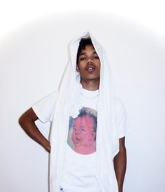

Ce site sert à checker les actus consernant le duo "Saveur Nocturne" et/ou les actus de la carrière solo de SEVEN et/ou de Lucifer
Artistes à Recommander (Les artistes recommander sur ce site changent 1 fois par semaine).
- Azur
- Furax Barbarossa.
- Davodka
- Fixpen Sill
- Scylla



Notre dernier son
Notre meilleur photo insta: